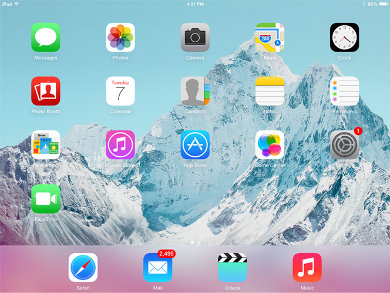

Microsoft created the Windows operating system in the mid-1980s. There have been many different versions of Windows, but the most recent ones are Windows 10 (released in 2015), Windows 8 (2012), Windows 7 (2009), and Windows Vista (2007). Windows comes pre-loaded on most new PCs, which helps to make it the most popular operating system in the world.

macOS (previously called OS X) is a line of operating systems created by Apple. It comes preloaded on all Macintosh computers, or Macs. Some of the specific versions include Mojave (released in 2018), High Sierra (2017), and Sierra (2016).
According to StatCounter Global Stats, macOS users account for less than 10% of global operating systems—much lower than the percentage of Windows users (more than 80%). One reason for this is that Apple computers tend to be more expensive. However, many people do prefer the look and feel of macOS over Windows.

Linux (pronounced LINN-ux) is a family of open-source operating systems, which means they can be modified and distributed by anyone around the world. This is different from proprietary software like Windows, which can only be modified by the company that owns it. The advantages of Linux are that it is free, and there are many different distributions—or versions—you can choose from.
According to StatCounter Global Stats, Linux users account for less than 2% of global operating systems. However, most servers run Linux because it's relatively easy to customize.

The operating systems we've been talking about so far were designed to run on desktop and laptop computers. Mobile devices such as phones, tablet computers, and MP3 players are different from desktop and laptop computers, so they run operating systems that are designed specifically for mobile devices. Examples of mobile operating systems include Apple iOS and Google Android. In the screenshot below, you can see iOS running on an iPad.
Operating systems for mobile devices generally aren't as fully featured as those made for desktop and laptop computers, and they aren't able to run all of the same software. However, you can still do a lot of things with them, like watch movies, browse the Web, manage your calendar, and play games.